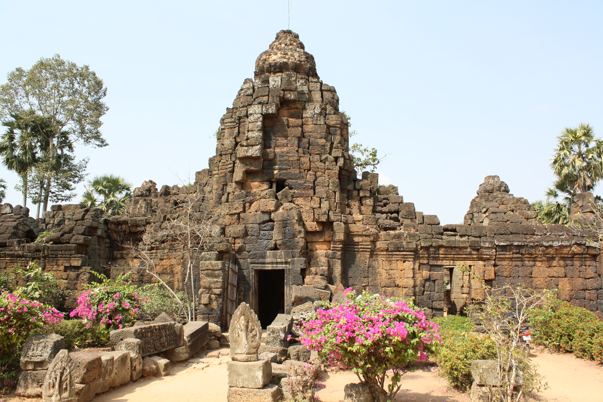

អំពីខេត្តតាកែវ
ខេត្តតាកែវ ស្ថិតនៅភាគខាងត្បូងនៃព្រះរាជាណាចក្រកម្ពុជា និងត្រូវបានគេស្គាល់ថា ជា "អង្រឹងនៃអរិយធម៌ខ្មែរ" ដោយសារមានប្រាសាទ និងសំណង់បុរាណជាច្រើន ដែលមានតម្លៃផ្នែកប្រវត្តិសាស្ត្រ និងវប្បធម៌។ ខេត្តនេះក៏ជាតំបន់កសិកម្មដ៏សំខាន់ ដែលមានដីមានជីជាតិ និងប្រជាពលរដ្ឋភាគច្រើនប្រកបរបរកសិកម្ម។
ប្រវត្តិសង្ខេប
តាកែវមានប្រវត្តិយូរលង់តាំងពីសម័យហ្វូណន និងចេនឡា ហើយត្រូវបានគេចាត់ទុកថា ជាតំបន់កំណើតនៃអរិយធម៌ខ្មែរបុរាណ។ ខេត្តនេះមានសំណង់បុរាណជាច្រើន ដូចជាប្រាសាទភ្នំដា និងអង្គរបុរី ដែលបង្ហាញពីភាពរុងរឿងនៃអាណាចក្រខ្មែរនាសម័យដើម។
កន្លែងទេសចរណ៍សំខាន់ៗ
- ប្រាសាទភ្នំដា
- សារមន្ទីរអង្គរបុរី
- ប្រាសាទនាងខ្មៅ
- បឹងតាមោកអង្គរបុរី
- វត្តភ្នំជីសូរ
- ភ្នំជីសូរ
ទីតាំងភូមិសាស្ត្រ
ខេត្តតាកែវ ស្ថិតនៅភាគខាងត្បូងនៃប្រទេសកម្ពុជា មានព្រំប្រទល់ជាប់ខេត្តកណ្តាល ខេត្តកំពត ខេត្តកំពង់ស្ពឺ និងព្រំដែនប្រទេសវៀតណាម។ ខេត្តនេះមានវាលស្រែធំទូលាយ ប្រព័ន្ធទន្លេ និងបឹងជាច្រើន ដែលអំណោយផលដល់វិស័យកសិកម្ម និងការអភិរក្សតំបន់ប្រវត្តិសាស្ត្រ។